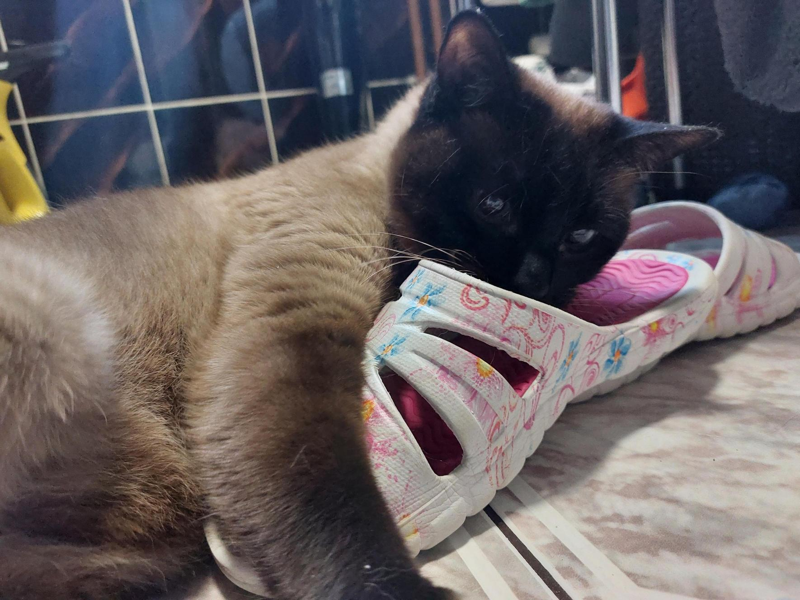
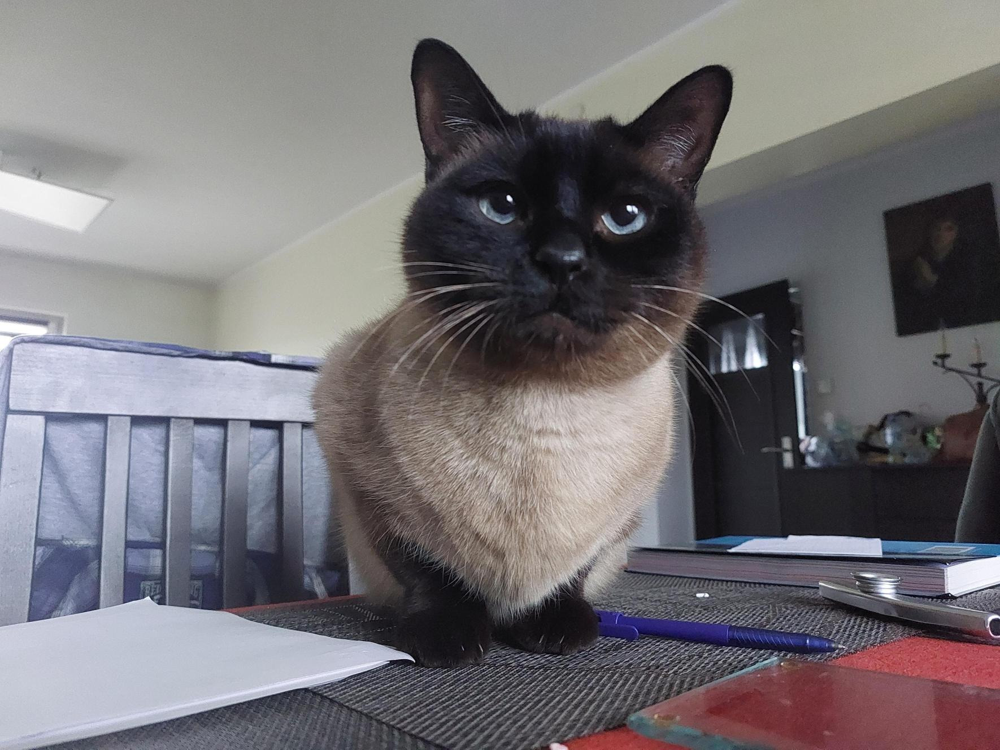
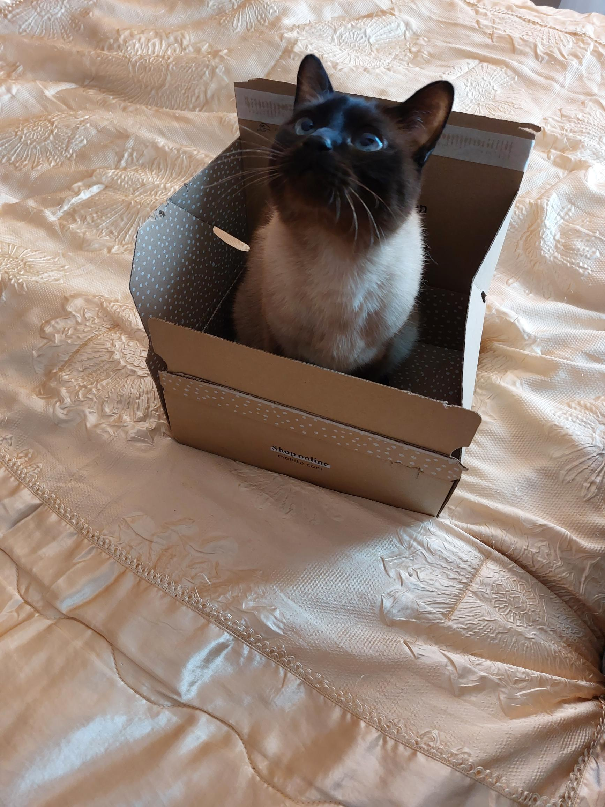
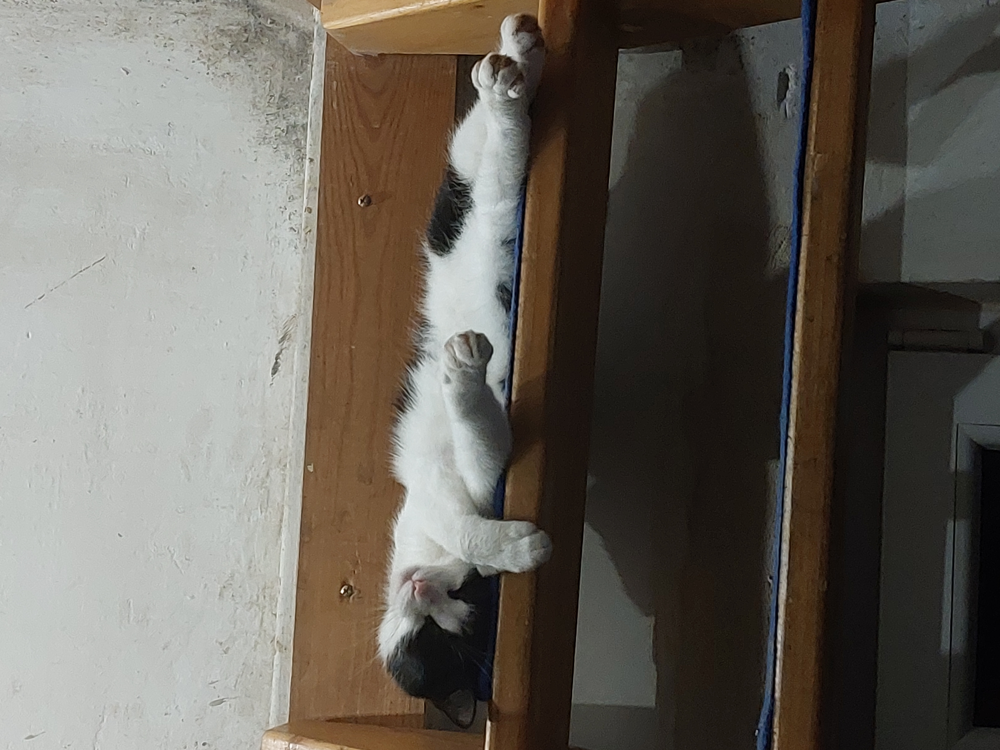
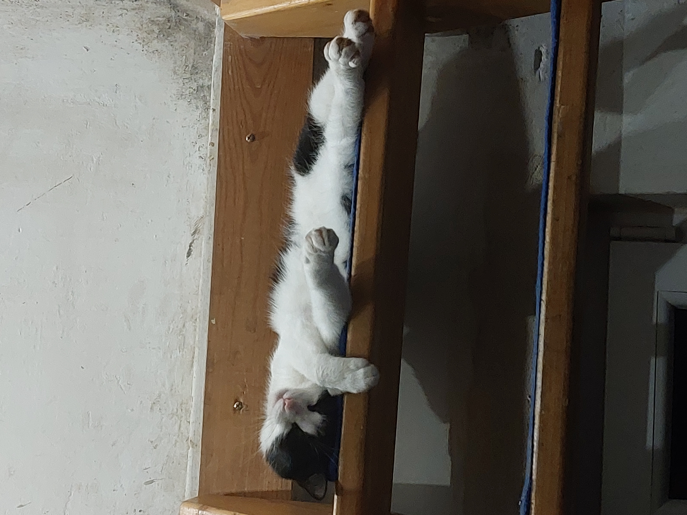
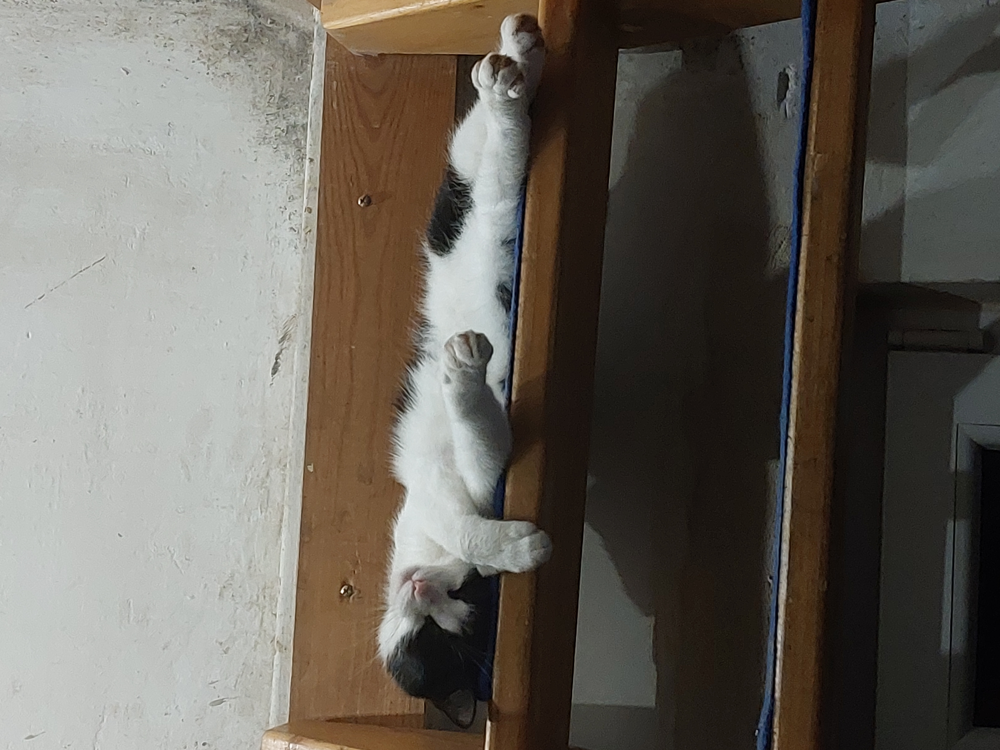

Dlaczego koty to najlepsze zwierzęta?
Jest bardzo dużo powodów dlaczego koty można uznać za najlepsze zwierzęta, oto kilka z nich: (źródło)
- 1. KOTY SĄ CICHE
Jeśli nie lubisz hałasów, koty są świetnym wyborem zwierzaka. Nawet ciche psie warknięcie jest dużo głośniejsze niż kocie "miał". W zależności od charakteru Twojego kota prawdopodobnie nie będziesz musiał martwić się o inne dźwięki takie jak przewracanie przedmiotów lub bieganie po mieszkaniu.
- 2. KOTY NIE SĄ WYMAGAJĄCE
W porównaniu z psami, koty są dużo mniej wymagające. Nie potrzeba im tresury, nie musisz wyprowadzać ich kilka razy dziennie na spacer o dziwnych porach, wystarczy im kuweta, na dodatek same dbają o swoją czystość. Oczywiście, długo włose koty nadal potrzebują regularnego czesania ale to nic w porwnaniu z psimi spacerami. - 3. KOTY ŁATWO WYCHOWAĆ
Jednym z największych zmartwień psiego właściciela jest wychowanie czworonoga. Koty za to, zazwyczaj wiedzą jak korzystać z kuwety od razu kiedy zawitają w twoim domu. Wszystko co musisz zrobić to pokazać im gdzie znajduje się kuweta, miska z jedzeniem i woda, resztą nie musisz się przejmować. - 4. SĄ Z NICH ŚWIETNI KOMPANI NAWET W MAŁYM MIESZKANIU
Kiedy chodzi o zwierzęta w bloku albo małym mieszkaniu, koty zazwyczaj sprawdzają się lepiej niż psy. W porównaniu z psami, koty potrzebują mniej przestrzeni, nawet w małym mieszkaniu kilka półek przy ścianie zwiększy ich terytorium do wystarczającego. W dodatku, skoro koty korzystają z kuwety, nie trzeba zabierać ich na dwór wiele razy dziennie. Dlatego niezależnie od twojego otoczenia nie musisz się martwić. - 5. NIE SĄ DROGIE W UTRZYMANIU
Według ASPCA, koszt opieki nad kotem jest mniejszy niż koszt opieki nad psem. To dlatego że zwykle jedzą mniej jedzenia, potrzebują mniej zabawek i nie trzeba regularnie chodzić z nimi do groomera.
Oczywiście to tylko 5 spośród milionów powodów dlaczego koty są najlepsze. Są przeurocze, jeśli nie wierzysz spójrz na kilka zdjęc poniżej, są to zdjęcia naszych kochanych kotów!!!





 



- Image Source:
Marcelina Ciepłuch, Adam Lewandowski
Koniec
- Twórcy:
- Marcelina Ciepłuch
- Adam Lewandowski